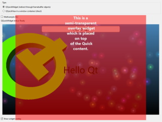

QQuickWidget - QQuickView Comparison Example
Demonstrates the benefits of QQuickWidget over a QQuickView embedded as a native window.

The example allows showing the same Qt Quick scene within the same QWidget-based user interface using two different approaches: one is using a QQuickView and using it as a child window and QWidget::createWindowContainer(). The other is using QQuickWidget which acts as a true QWidget and supports, among others, better clipping and stacking, as is expected from a true QWidget.
The Qt Quick scene also uses direct OpenGL rendering, proving that with QQuickWidget the rendering still happens using the accelerated 3D API. The implication of this is that the example is tied to OpenGL and will not work with other graphics APIs (Vulkan, Metal, Direct 3D).
Clicking on the Show Overlay checkbox demonstrates a widget stacking case that is not rendering as expected when embedding a native window, while QQuickWidget makes it render as expected.
Multisample antialiasing can also be exercised. When enabling it via the corresponding checkbox, QQuickWidget will internally render into a multisample renderbuffer, which is then resolved into a regular, non-multisample 2D texture after each render pass, thus enabling multisampling for the Qt Quick content without affecting the rest of the QWidget UI. With QQuickView the native window will request multisampling for its corresponding window surface, bringing similar results, if supported by the platform.
The Qt Quick scene is interactive: typing into the text field is possible regardless of which embedding technology is used. QQuickWidget takes care of forwarding input events to the underlying Qt Quick scene automatically.